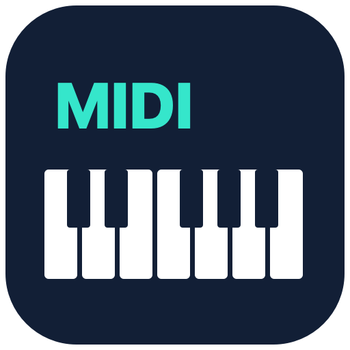

RuCo · Free music tools

Rock Band
MIDI Bridge
Give your Rock Band keyboard a new life as a wireless MIDI controller.
A free, native Mac app that connects the Harmonix Rock Band 3 Wii wireless keyboard to Pro Tools and other CoreMIDI music apps. Play your software synths with real key velocity, touch-strip control and selectable MIDI routing.
Download for Mac — v1.2.0 · Source code and setup guide
Free and open source · Apple notarized · macOS 13+ · Apple Silicon and Intel
Check your controller
This release supports the Harmonix Rock Band 3 Wii wireless keyboard, item 96161, with its matching Wii USB receiver (vendor 1BAD, product 3330). Xbox and PlayStation receivers are not supported. The app sends MIDI; load a software instrument in your music app to hear sound.
From game controller to music controller
- All 25 keys with velocity-sensitive MIDI notes.
- Choose MIDI channel, octave and output destination.
- Use the touch strip for modulation, filter cutoff or expression.
- Includes overdrive pitch-bend and digital sustain-pedal mappings.
- Send to an existing CoreMIDI destination or use the built-in virtual MIDI source.
- Release-all-notes control and menu-bar access.
Get playing
- Download and unzip the app, then move Rock Band MIDI Bridge to Applications.
- Open it, connect the matching USB receiver, and power on and pair your keyboard.
- Select a MIDI output. In your DAW, enable that input, load a synth and enable monitoring or record-arm the track.
The app is Developer ID signed and Apple notarized, with the ticket attached. Open it normally; no Gatekeeper override is required. macOS may show its standard first-open confirmation for an internet download.
Using Pro Tools
In Audio MIDI Setup, show MIDI Studio, open IAC Driver, enable Device is online, and add a bus called Rock Band. In the bridge, refresh outputs and choose IAC Driver Rock Band. Enable that input in Pro Tools under Setup → MIDI → MIDI Input Devices, then select it on an instrument track and record-enable the track.
Read the full setup and troubleshooting guide
Compatibility and testing
Requires macOS 13 Ventura or later. One universal app includes Apple Silicon and Intel support. Live keyboard notes, chords, velocity and touch-strip MIDI were checked on Apple Silicon, including IAC routing. Intel is cross-built and has not been run on Intel hardware. Pedal hardware and overdrive pitch mode have not yet been physically verified. The receiver reports up to five velocities; larger chords use a safe fallback. Analog expression pedals are not supported.
Open source, with thanks
MIT licensed. Thanks to PlasticBand for the report-layout documentation, and Jason Harley’s earlier Windows USB-to-MIDI project for its reference material.
Independent community software. Not affiliated with or endorsed by Harmonix, Nintendo, Avid or Apple. Product names belong to their respective owners.